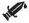

(1.1a) “The Revelation of Jesus Christ, which God gave unto him … sent … by his angel unto his servant John.” The book of Revelation was revealed to Jesus by God and was delivered by an angel to a guy named John.
(1.1a) “The Revelation of Jesus Christ, which God gave unto him … sent … by his angel unto his servant John.” The book of Revelation was revealed to Jesus by God and was delivered by an angel to a guy named John.The time is at hand. — Revelation 1.3, 22.10
Everything in Revelation should probably be highlighted, because it’s all violent, cruel, or absurd in one way or another. But that would make it too hard to read, and it’s hard enough as it is.
Revelation has my vote for the worst book in the Bible. And since the Bible, Quran, and the Book of Mormon are the three worst books ever written, that’s saying something.
Here are some highlights:
1 The Revelation of Jesus Christ, which God gave unto him, to shew unto his servants things which must shortly come to pass; and he sent and signified it by his angel unto his servant John:
(1.1a) “The Revelation of Jesus Christ, which God gave unto him … sent … by his angel unto his servant John.” The book of Revelation was revealed to Jesus by God and was delivered by an angel to a guy named John.
(1.1b, 3) “Things which must shortly come to pass … The time is at hand.” John believed that the things that he wrote about would happen soon, within his own lifetime. After nearly 2000 years, believers still believe that “the time is at hand” and that the events described in Revelation will “shortly come to pass.”
2 Who bare record of the word of God, and of the testimony of Jesus Christ, and of all things that he saw.
3 Blessed is he that readeth, and they that hear the words of this prophecy, and keep those things which are written therein: for the time is at hand.
4 John to the seven churches which are in Asia: Grace be unto you, and peace, from him which is, and which was, and which is to come; and from the seven Spirits which are before his throne;
(1.4) “From the seven Spirits which are before his throne.” The “seven Spirits” are the seven spirits of God (4.5)
5 And from Jesus Christ, who is the faithful witness, and the first begotten of the dead, and the prince of the kings of the earth. Unto him that loved us, and washed us from our sins in his own blood,
 (1.5) “Jesus … washed us … in his own blood.”
6 And hath made us kings and priests unto God and his Father; to him be glory and dominion for ever and ever. Amen.
7 Behold, he cometh with clouds; and every eye shall see him, and they also which pierced him: and all kindreds of the earth shall wail because of him. Even so, Amen.

 (1.7a) “He cometh with clouds; and every eye shall see him, and they also which pierced him.” Millions have lived and died without ever seeing Jesus descend from the sky. Such an event, if it ever occurred, could only be seen by all on a flat earth.
(1.7a) “He cometh with clouds; and every eye shall see him, and they also which pierced him.” Millions have lived and died without ever seeing Jesus descend from the sky. Such an event, if it ever occurred, could only be seen by all on a flat earth.
 377 Will Jesus’ second coming be visible to all?
377 Will Jesus’ second coming be visible to all?
(1.7b) “All kindreds of the earth shall wail because of him.” Everyone on earth will wail because of Jesus.
8 I am Alpha and Omega, the beginning and the ending, saith the Lord, which is, and which was, and which is to come, the Almighty.
9 I John, who also am your brother, and companion in tribulation, and in the kingdom and patience of Jesus Christ, was in the isle that is called Patmos, for the word of God, and for the testimony of Jesus Christ.
(1.10-11) John’s vision began when he was in the Spirit on the Lord’s day. He heard a loud voice claiming to be Jesus, telling him to write a book and send it to seven Asian churches.
10 I was in the Spirit on the Lord’s day, and heard behind me a great voice, as of a trumpet,
11 Saying, I am Alpha and Omega, the first and the last: and, What thou seest, write in a book, and send it unto the seven churches which are in Asia; unto Ephesus, and unto Smyrna, and unto Pergamos, and unto Thyatira, and unto Sardis, and unto Philadelphia, and unto Laodicea.
(1.10-11) “I was in the spirit on the Lord’s day, and heard behind me a great voice ... Saying, I am Alpha and Omega ... write in a book, and send it unto the seven churches which are in Asia.”
(1.12-20) John’s Jesus is surrounded by seven golden candlesticks. He has white hair, eyes of fire, and feet of brass. He holds seven stars in his hand and has a sword sticking out of his mouth.
12 And I turned to see the voice that spake with me. And being turned, I saw seven golden candlesticks;
13 And in the midst of the seven candlesticks one like unto the Son of man, clothed with a garment down to the foot, and girt about the paps with a golden girdle.
(1.12-13) “I saw seven golden candlesticks. And … the Son of man, clothed with a garment down to the foot, and girt about the paps with a golden girdle.”
14 His head and his hairs were white like wool, as white as snow; and his eyes were as a flame of fire;
15 And his feet like unto fine brass, as if they burned in a furnace; and his voice as the sound of many waters.
(1.14-15) “His head and his hairs were white like wool, as white as snow; and his eyes were as a flame of fire. And his feet like unto fine brass.”
16 And he had in his right hand seven stars: and out of his mouth went a sharp twoedged sword: and his countenance was as the sun shineth in his strength.
(1.16) “He had in his right hand seven stars: and out of his mouth went a sharp twoedged sword.”
17 And when I saw him, I fell at his feet as dead. And he laid his right hand upon me, saying unto me, Fear not; I am the first and the last:
(1.17) “I am the first and the last.”
349 Is Jesus God?
18 I am he that liveth, and was dead; and, behold, I am alive for evermore, Amen; and have the keys of hell and of death.
(1.18) “I … have the keys of hell and of death.”
19 Write the things which thou hast seen, and the things which are, and the things which shall be hereafter;
20 The mystery of the seven stars which thou sawest in my right hand, and the seven golden candlesticks. The seven stars are the angels of the seven churches: and the seven candlesticks which thou sawest are the seven churches.
(1.20) “The seven stars are the angels of the seven churches: and the seven candlesticks which thou sawest are the seven churches.”
(2.1-7) To the angel of the church of Ephesus
Jesus has something against the church of Ephesus. It left its first love and unless it repents, he will take away its candlestick. Still, Jesus and Ephesus have something in common: they hate the deeds of Nicolaitanes. Whoever overcomes, will get the tree of life.
2 Unto the angel of the church of Ephesus write; These things saith he that holdeth the seven stars in his right hand, who walketh in the midst of the seven golden candlesticks;
(2.1) “These things saith he that holdeth the seven stars in his right hand, who walketh in the midst of the seven golden candlesticks.”
2 I know thy works, and thy labour, and thy patience, and how thou canst not bear them which are evil: and thou hast tried them which say they are apostles, and are not, and hast found them liars:
3 And hast borne, and hast patience, and for my name’s sake hast laboured, and hast not fainted.
4 Nevertheless I have somewhat against thee, because thou hast left thy first love.
(2.4) “I have somewhat against thee, because thou hast left thy first love.”
5 Remember therefore from whence thou art fallen, and repent, and do the first works; or else I will come unto thee quickly, and will remove thy candlestick out of his place, except thou repent.
(2.5) “I will … remove thy candlestick … except thou repent.”
6 But this thou hast, that thou hatest the deeds of the Nicolaitans, which I also hate.
(2.6) “Thou hatest the deeds of the Nicolaitanes, which I also hate.”
7 He that hath an ear, let him hear what the Spirit saith unto the churches; To him that overcometh will I give to eat of the tree of life, which is in the midst of the paradise of God.
(2.7) “To him that overcometh will I give to eat of the tree of life.”
8 And unto the angel of the church in Smyrna write; These things saith the first and the last, which was dead, and is alive;


 (2.9-11) To the angel of the church in Smyrna
(2.9-11) To the angel of the church in Smyrna
Jesus knows all about those blaspheming false Jews who are card-carrying members of the synagogue of Satan. Those that overcome will not be hurt by the second death.
9 I know thy works, and tribulation, and poverty, (but thou art rich) and I know the blasphemy of them which say they are Jews, and are not, but are the synagogue of Satan.
(2.9) “I know the blasphemy of them which say they are Jews, and are not, but are the synagogue of Satan.”
10 Fear none of those things which thou shalt suffer: behold, the devil shall cast some of you into prison, that ye may be tried; and ye shall have tribulation ten days: be thou faithful unto death, and I will give thee a crown of life.
11 He that hath an ear, let him hear what the Spirit saith unto the churches; He that overcometh shall not be hurt of the second death.
(2.11) “He that overcometh shall not be hurt of the second death.”
12 And to the angel of the church in Pergamos write; These things saith he which hath the sharp sword with two edges;
(2.13-17) To the angel of the church in Pergamos
Jesus knows where Satan lives: the town of Pergamos! And Jesus has a few things against that town, too. There was that stuff a while back with Balaam and Balac, eating things sacrificed to idols, fornication, and whatnot. But what he really hates is the doctrine of Nicolaitanes. Repent or Jesus will fight with the sword that sticks out of his mouth. Whoever overcomes will get some manna to eat, along with a white stone with their own secret name written on it.
13 I know thy works, and where thou dwellest, even where Satan’s seat is: and thou holdest fast my name, and hast not denied my faith, even in those days wherein Antipas was my faithful martyr, who was slain among you, where Satan dwelleth.
(2.13) “I know … even where Satan’s seat is … Among you, where Satan dwelleth.”
14 But I have a few things against thee, because thou hast there them that hold the doctrine of Balaam, who taught Balac to cast a stumblingblock before the children of Israel, to eat things sacrificed unto idols, and to commit fornication.
(2.14) “I have a few things against thee.”
15 So hast thou also them that hold the doctrine of the Nicolaitans, which thing I hate.
(2.15) “So hast thou also them that hold the doctrine of the Nicolaitanes, which thing I hate.”
16 Repent; or else I will come unto thee quickly, and will fight against them with the sword of my mouth.
(2.16) “Repent; or else I … will fight against them with the sword of my mouth.”
17 He that hath an ear, let him hear what the Spirit saith unto the churches; To him that overcometh will I give to eat of the hidden manna, and will give him a white stone, and in the stone a new name written, which no man knoweth saving he that receiveth it.
(2.17) “To him that overcometh will I give to eat of the hidden manna, and will give him a white stone, and in the stone a new name … which no man knoweth saving he that receiveth it.”


 (2.18-28) To the angel of the church in Thyatira
(2.18-28) To the angel of the church in Thyatira
Jesus has a few things against Thyatira, too. Jezebel has taught them to fornicate and eat things sacrificed to idols. So Jesus will throw Jezebel and her sex partners into a bed of torture. Then he’ll kill her children (with death). Whoever overcomes will rule everyone else with an iron rod, smashing the others to pieces. Jesus will even throw in the morning star (the planet Venus?) as a bonus prize.
18 And unto the angel of the church in Thyatira write; These things saith the Son of God, who hath his eyes like unto a flame of fire, and his feet are like fine brass;
(2.18) “These things saith the the Son of God, who hath his eyes like unto a flame of fire, and his feet are like fine brass.”
19 I know thy works, and charity, and service, and faith, and thy patience, and thy works; and the last to be more than the first.
20 Notwithstanding I have a few things against thee, because thou sufferest that woman Jezebel, which calleth herself a prophetess, to teach and to seduce my servants to commit fornication, and to eat things sacrificed unto idols.
(2.20) “I have a few things against thee, because thou sufferest that woman Jezebel … to teach and to seduce my servants to commit fornication.”
21 And I gave her space to repent of her fornication; and she repented not.
22 Behold, I will cast her into a bed, and them that commit adultery with her into great tribulation, except they repent of their deeds.
(2.22) “I will cast her into a bed, and them that commit adultery with her into great tribulation.”
23 And I will kill her children with death; and all the churches shall know that I am he which searcheth the reins and hearts: and I will give unto every one of you according to your works.
(2.23a) “I will kill her children with death.”
(2.23b) “I will give unto every one of you according to your works.”
304 Is salvation by faith alone?
24 But unto you I say, and unto the rest in Thyatira, as many as have not this doctrine, and which have not known the depths of Satan, as they speak; I will put upon you none other burden.
25 But that which ye have already hold fast till I come.
26 And he that overcometh, and keepeth my works unto the end, to him will I give power over the nations:
(2.26) “He that overcometh … to him will I give power over the nations.”
27 And he shall rule them with a rod of iron; as the vessels of a potter shall they be broken to shivers: even as I received of my Father.
(2.27) “He shall rule them with a rod of iron; as the vessels of a potter shall they be broken to shivers.”
28 And I will give him the morning star.
(2.28) “And I will give him the morning star.”
29 He that hath an ear, let him hear what the Spirit saith unto the churches.
(3.1-5) To the angel of the church in Sardis
The guy with the seven spirits of God (Does that include the Holy Spirit?) and the seven stars has noticed that there are a few worthy Sardisians among the living dead that haven’t yet soiled their clothes; they will get to walk around with Jesus wearing white, for they are worthy. Whoever else overcomes will get some white garments too, and Jesus will mention his (or her?) name in front of God and his angels.
3 And unto the angel of the church in Sardis write; These things saith he that hath the seven Spirits of God, and the seven stars; I know thy works, that thou hast a name that thou livest, and art dead.
(3.1a) “These things saith he that hath the seven Spirits of God, and the seven stars.”
(3.1b-4) “Thou livest, and art dead … Thou hast a few names even in Sardis which have not defiled their garments; and they shall walk with me in white: for they are worthy.”
2 Be watchful, and strengthen the things which remain, that are ready to die: for I have not found thy works perfect before God.
3 Remember therefore how thou hast received and heard, and hold fast, and repent. If therefore thou shalt not watch, I will come on thee as a thief, and thou shalt not know what hour I will come upon thee.
4 Thou hast a few names even in Sardis which have not defiled their garments; and they shall walk with me in white: for they are worthy.
5 He that overcometh, the same shall be clothed in white raiment; and I will not blot out his name out of the book of life, but I will confess his name before my Father, and before his angels.
(3.5) “He that overcometh, the same shall be clothed in white raiment; and I will not blot out his name out of the book of life, but I will confess his name before my Father, and before his angels.”
6 He that hath an ear, let him hear what the Spirit saith unto the churches.
(3.7-12) To the angel of the church in Philadelphia
Jesus will force Jews (members of the synagogue of Satan) to worship before the feet of Christian Philadelphians. Jesus will come quickly; hang on to your crown until he arrives. Whoever overcomes will have the names of God, God’s city (new Jerusalem), and Jesus’ new name tattooed on him (or her?), and Jesus will do the tattooing himself!
7 And to the angel of the church in Philadelphia write; These things saith he that is holy, he that is true, he that hath the key of David, he that openeth, and no man shutteth; and shutteth, and no man openeth;
8 I know thy works: behold, I have set before thee an open door, and no man can shut it: for thou hast a little strength, and hast kept my word, and hast not denied my name.
9 Behold, I will make them of the synagogue of Satan, which say they are Jews, and are not, but do lie; behold, I will make them to come and worship before thy feet, and to know that I have loved thee.
(3.9) “I will make them of the synagogue of Satan, which say they are Jews, and are not, but do lie; behold, I will make them to come and worship before thy feet.”
10 Because thou hast kept the word of my patience, I also will keep thee from the hour of temptation, which shall come upon all the world, to try them that dwell upon the earth.
11 Behold, I come quickly: hold that fast which thou hast, that no man take thy crown.
(3.11) “Behold, I come quickly: hold … thy crown.”
12 Him that overcometh will I make a pillar in the temple of my God, and he shall go no more out: and I will write upon him the name of my God, and the name of the city of my God, which is new Jerusalem, which cometh down out of heaven from my God: and I will write upon him my new name.
(3.12) “Him that overcometh will I … write upon him the name of my God, and the name of the city of my God, which is new Jerusalem … and I will write upon him my new name.”
13 He that hath an ear, let him hear what the Spirit saith unto the churches.
(3.14-21) To the angel of the church of the Laodiceans
The Amen (aka Jesus) will spit the Laodiceans out of his mouth because they are lukewarm, and the Amen likes things either hot or cold. The Amen says to buy gold, white clothes, and eye salve. Whoever overcomes will get to sit with the Amen in his throne, who sits in his Father’s throne. So I guess all three of you will sit in the same throne together. (I’m not sure who will be on the bottom.)
14 And unto the angel of the church of the Laodiceans write; These things saith the Amen, the faithful and true witness, the beginning of the creation of God;
(3.14) “These things saith the Amen.”
15 I know thy works, that thou art neither cold nor hot: I would thou wert cold or hot.
16 So then because thou art lukewarm, and neither cold nor hot, I will spue thee out of my mouth.
(3.16) “Because thou art lukewarm, and neither cold nor hot, I will spue thee out of my mouth.”
17 Because thou sayest, I am rich, and increased with goods, and have need of nothing; and knowest not that thou art wretched, and miserable, and poor, and blind, and naked:
18 I counsel thee to buy of me gold tried in the fire, that thou mayest be rich; and white raiment, that thou mayest be clothed, and that the shame of thy nakedness do not appear; and anoint thine eyes with eyesalve, that thou mayest see.
(3.18) “Buy … gold … white raiment … and eyesalve.”
19 As many as I love, I rebuke and chasten: be zealous therefore, and repent.
20 Behold, I stand at the door, and knock: if any man hear my voice, and open the door, I will come in to him, and will sup with him, and he with me.
21 To him that overcometh will I grant to sit with me in my throne, even as I also overcame, and am set down with my Father in his throne.
(3.21) “To him that overcometh will I grant to sit with me in my throne, even as I … am set down with my Father in his throne.”
22 He that hath an ear, let him hear what the Spirit saith unto the churches.
(4.1-5) John’s spirit goes to heaven and sees “the seven Spirits of God.”
4 After this I looked, and, behold, a door was opened in heaven: and the first voice which I heard was as it were of a trumpet talking with me; which said, Come up hither, and I will shew thee things which must be hereafter.
(4.1) “A door was opened in heaven: and the first voice … was … a trumpet talking with me; which said … I will shew thee things which must be hereafter.”
2 And immediately I was in the spirit: and, behold, a throne was set in heaven, and one sat on the throne.
(4.2) “Immediately I was in the spirit: and … a throne was set in heaven, and one sat on the throne.”
3 And he that sat was to look upon like a jasper and a sardine stone: and there was a rainbow round about the throne, in sight like unto an emerald.
(4.3) “He that sat was … like a jasper and a sardine stone.”
4 And round about the throne were four and twenty seats: and upon the seats I saw four and twenty elders sitting, clothed in white raiment; and they had on their heads crowns of gold.
(4.4) “Round … the throne were four and twenty seats: and upon the seats … elders sitting, clothed in white … and they had on their heads crowns of gold.”
5 And out of the throne proceeded lightnings and thunderings and voices: and there were seven lamps of fire burning before the throne, which are the seven Spirits of God.
(4.5) “Out of the throne proceeded lightnings and thunderings and voices: and there were seven lamps of fire burning before the throne, which are the seven Spirits of God.”
(4.6-10) John sees four beasts (lion, calf, man, eagle) each with six wings and “full of eyes.”
6 And before the throne there was a sea of glass like unto crystal: and in the midst of the throne, and round about the throne, were four beasts full of eyes before and behind.
(4.6) “Before the throne there was a sea of glass … and … four beasts full of eyes before and behind.”
7 And the first beast was like a lion, and the second beast like a calf, and the third beast had a face as a man, and the fourth beast was like a flying eagle.
(4.7) “The first beast was like a lion, and the second beast like a calf, and the third beast had a face as a man, and the fourth beast was like a flying eagle.”
8 And the four beasts had each of them six wings about him; and they were full of eyes within: and they rest not day and night, saying, Holy, holy, holy, Lord God Almighty, which was, and is, and is to come.
(4.8) “The four beasts had … six wings … and they were full of eyes … saying, Holy, holy, holy, LORD God Almighty, which was, and is, and is to come.”
9 And when those beasts give glory and honour and thanks to him that sat on the throne, who liveth for ever and ever,
10 The four and twenty elders fall down before him that sat on the throne, and worship him that liveth for ever and ever, and cast their crowns before the throne, saying,
(4.10) “The four and twenty elders fall down before him that sat on the throne, and worship him … and cast their crowns before the throne, saying,”
11 Thou art worthy, O Lord, to receive glory and honour and power: for thou hast created all things, and for thy pleasure they are and were created.
(4.11) “Thou hast created all things, and for thy pleasure they are and were created.” God created parasites, pathogens, and predators for his own pleasure. He likes to watch things suffer.
(5.1-14) John sees a book with seven seals and an angel that screams, “Who can open the book?” But no one in heaven or on earth could do it. Until “the lion of the tribe of Judah” gave it a try. He opened the seals with no problem and then transformed into a 7-eyed, 7-horned, dead lamb with the 7 Spirits of God. The point is, I guess, that both the lion and the lamb are really Jesus, and only he (they?) have the strength to break the seals. So he does it and everyone (the 100 million angels and monsters in heaven, and all the animals on earth) says how great he is for doing it.
5 And I saw in the right hand of him that sat on the throne a book written within and on the backside, sealed with seven seals.
(5.1) “I saw … a book … sealed with seven seals.”
2 And I saw a strong angel proclaiming with a loud voice, Who is worthy to open the book, and to loose the seals thereof?
(5.2) “And … a strong angel proclaiming with a loud voice, Who is worthy to open the book, and to loose the seals thereof?”
3 And no man in heaven, nor in earth, neither under the earth, was able to open the book, neither to look thereon.
(5.3) “No man in heaven, nor in earth … was able to open the book.”
4 And I wept much, because no man was found worthy to open and to read the book, neither to look thereon.
5 And one of the elders saith unto me, Weep not: behold, the Lion of the tribe of Juda, the Root of David, hath prevailed to open the book, and to loose the seven seals thereof.
(5.5) “The Lion of the tribe of Juda … hath prevailed to open the book.”
6 And I beheld, and, lo, in the midst of the throne and of the four beasts, and in the midst of the elders, stood a Lamb as it had been slain, having seven horns and seven eyes, which are the seven Spirits of God sent forth into all the earth.
(5.6) “I beheld … a Lamb as it had been slain, having seven horns and seven eyes, which are the seven Spirits of God.”
7 And he came and took the book out of the right hand of him that sat upon the throne.
(5.7) “He came and took the book out of the right hand of him that sat upon the throne.”
8 And when he had taken the book, the four beasts and four and twenty elders fell down before the Lamb, having every one of them harps, and golden vials full of odours, which are the prayers of saints.
(5.8) “When he had taken the book, the four beasts and four and twenty elders fell down before the Lamb, having every one of them harps, and golden vials full of odours.”
9 And they sung a new song, saying, Thou art worthy to take the book, and to open the seals thereof: for thou wast slain, and hast redeemed us to God by thy blood out of every kindred, and tongue, and people, and nation;
(5.9) “And they sung a new song, saying, Thou art worthy … for thou wast slain, and hast redeemed us to God by thy blood.”
10 And hast made us unto our God kings and priests: and we shall reign on the earth.
11 And I beheld, and I heard the voice of many angels round about the throne and the beasts and the elders: and the number of them was ten thousand times ten thousand, and thousands of thousands;
(5.11) “I beheld, and I heard the voice of many angels round about the throne and the beasts and the elders: and the number of them was ten thousand times ten thousand, and thousands of thousands.”
12 Saying with a loud voice, Worthy is the Lamb that was slain to receive power, and riches, and wisdom, and strength, and honour, and glory, and blessing.
(5.12) “Saying with a loud voice, Worthy is the Lamb that was slain to receive power, and riches, and wisdom, and strength, and honour, and glory, and blessing.”
13 And every creature which is in heaven, and on the earth, and under the earth, and such as are in the sea, and all that are in them, heard I saying, Blessing, and honour, and glory, and power, be unto him that sitteth upon the throne, and unto the Lamb for ever and ever.
(5.13) “And every creature … saying, Blessing, and honour, and glory, and power, be unto him that sitteth upon the throne, and unto the Lamb for ever and ever.”
14 And the four beasts said, Amen. And the four and twenty elders fell down and worshipped him that liveth for ever and ever.
(5.14) “And the four beasts said, Amen.”
(6.1-17) Jesus (the 7-horned, 7-eyed, 7-holy spirited dead lamb from chapter 5) begins breaking seals and all kinds of bad shit happens. Before each seal is broken, a beast tells John to “come and see.”
6 And I saw when the Lamb opened one of the seals, and I heard, as it were the noise of thunder, one of the four beasts saying, Come and see.
First seal: A man on a white horse goes conquering.
2 And I saw, and behold a white horse: and he that sat on him had a bow; and a crown was given unto him: and he went forth conquering, and to conquer.
(6.2) “I saw … a white horse: and he that sat on him had a bow … and he went forth conquering.”
3 And when he had opened the second seal, I heard the second beast say, Come and see.
Second seal: A man with a big sword on a red horse forces people to kill each other.
4 And there went out another horse that was red: and power was given to him that sat thereon to take peace from the earth, and that they should kill one another: and there was given unto him a great sword.
(6.4) “Another horse … was red: and power was given to him that sat thereon to take peace from the earth, and that they should kill one another: and there was given unto him a great sword.”
Third seal: A man on a black horse with a balance in his hand.
5 And when he had opened the third seal, I heard the third beast say, Come and see. And I beheld, and lo a black horse; and he that sat on him had a pair of balances in his hand.
(6.5) “I beheld … a black horse; and he that sat on him had a pair of balances in his hand.”
6 And I heard a voice in the midst of the four beasts say, A measure of wheat for a penny, and three measures of barley for a penny; and see thou hurt not the oil and the wine.
Fourth seal: A pale horse with a rider named Death with Hell following was given power to kill one quarter of the earth’s population with the sword, starvation, and “the beasts of the earth.”
7 And when he had opened the fourth seal, I heard the voice of the fourth beast say, Come and see.
8 And I looked, and behold a pale horse: and his name that sat on him was Death, and Hell followed with him. And power was given unto them over the fourth part of the earth, to kill with sword, and with hunger, and with death, and with the beasts of the earth.
(6.8) “I … behold a pale horse: and his name that sat on him was Death, and Hell followed with him. And power was given unto them over the fourth part of the earth, to kill with sword, and with hunger, and with death, and with the beasts of the earth.”
Fifth seal: Dead martyrs. (This is the excuse for all the other killing.)
9 And when he had opened the fifth seal, I saw under the altar the souls of them that were slain for the word of God, and for the testimony which they held:
(6.9) “When he had opened the fifth seal, I saw… the souls of them that were slain for the word of God.”
(6.10-11) The martyrs just can’t wait until everyone is slaughtered. God gives them white robes and tells them to wait until he’s done with his killing spree.
10 And they cried with a loud voice, saying, How long, O Lord, holy and true, dost thou not judge and avenge our blood on them that dwell on the earth?
(6.10) “They cried with a loud voice, saying, How long, O Lord … dost thou not … avenge our blood on them that dwell on the earth?”
11 And white robes were given unto every one of them; and it was said unto them, that they should rest yet for a little season, until their fellowservants also and their brethren, that should be killed as they were, should be fulfilled.
(6.11) “White robes were given unto every one of them; and it was said unto them, that they should rest … until … their brethren … be killed.”
Sixth seal: A great earthquake, the sun becomes black, and the moon red, the stars fall from heaven, mountains and islands move around, and everyone on earth wishes they were dead (if they’re not already).
12 And I beheld when he had opened the sixth seal, and, lo, there was a great earthquake; and the sun became black as sackcloth of hair, and the moon became as blood;
(6.12) “There was a great earthquake; and the sun became black … and the moon became as blood.”
13 And the stars of heaven fell unto the earth, even as a fig tree casteth her untimely figs, when she is shaken of a mighty wind.
(6.13) “The stars of heaven fell unto the earth.”
14 And the heaven departed as a scroll when it is rolled together; and every mountain and island were moved out of their places.
(6.14) “Heaven departed as a scroll when it is rolled together; and every mountain and island were moved out of their places.”
15 And the kings of the earth, and the great men, and the rich men, and the chief captains, and the mighty men, and every bondman, and every free man, hid themselves in the dens and in the rocks of the mountains;
(6.15) “The … men … hid themselves in the dens and in the rocks of the mountains.”
16 And said to the mountains and rocks, Fall on us, and hide us from the face of him that sitteth on the throne, and from the wrath of the Lamb:
(6.16) “And said to the mountains and rocks, Fall on us, and hide us from … the wrath of the Lamb.”
17 For the great day of his wrath is come; and who shall be able to stand?
(6.17) “For the great day of his wrath is come; and who shall be able to stand?”
7 And after these things I saw four angels standing on the four corners of the earth, holding the four winds of the earth, that the wind should not blow on the earth, nor on the sea, nor on any tree.
(7.1) “I saw four angels standing on the four corners of the earth.” The earth is flat and square-shaped.
(7.2-3) God tells his murderous angels to “hurt not the earth, neither the sea, nor the trees, till we have sealed the servants of your God on their foreheads.”
Christians like to use the first part of verse 7.3 to show God’s loving concern for the environment. But the last part makes it clear that it was the angel’s God-given job to “hurt the earth and the sea” just as soon as they finish their forehead-marking job.
2 And I saw another angel ascending from the east, having the seal of the living God: and he cried with a loud voice to the four angels, to whom it was given to hurt the earth and the sea,
(7.2) “I saw another angel … and he cried with a loud voice to the four angels, to whom it was given to hurt the earth and the sea,”
3 Saying, Hurt not the earth, neither the sea, nor the trees, till we have sealed the servants of our God in their foreheads.
(7.3) “Saying, Hurt not the earth, neither the sea, nor the trees, till we have sealed the servants of our God in their foreheads.”
4 And I heard the number of them which were sealed: and there were sealed an hundred and forty and four thousand of all the tribes of the children of Israel.
(7.4) “The number … sealed … were … an hundred and forty and four thousand … of the children of Israel.” 144,000 Jews will be going to heaven; everyone else is going to hell.
Few Christians take the 144,000 number seriously, of course. But the Jehovah’s Witnesses do. Boy do they ever! They believe that there are two distinct classes of believers: the 144,000 “Anointed” that are going to heaven and the “Great Crowd” that will remain here on earth. The WatchTower teaches that heaven closed in 1935, and that everyone else will either be killed at Armageddon (if they are not JWs) or live forever on earth.
5 Of the tribe of Juda were sealed twelve thousand. Of the tribe of Reuben were sealed twelve thousand. Of the tribe of Gad were sealed twelve thousand.
6 Of the tribe of Aser were sealed twelve thousand. Of the tribe of Nepthalim were sealed twelve thousand. Of the tribe of Manasses were sealed twelve thousand.
(7.6) “Of the tribe of Manasses”
84 What were the 12 tribes of Israel?
7 Of the tribe of Simeon were sealed twelve thousand. Of the tribe of Levi were sealed twelve thousand. Of the tribe of Issachar were sealed twelve thousand.
8 Of the tribe of Zabulon were sealed twelve thousand. Of the tribe of Joseph were sealed twelve thousand. Of the tribe of Benjamin were sealed twelve thousand.
9 After this I beheld, and, lo, a great multitude, which no man could number, of all nations, and kindreds, and people, and tongues, stood before the throne, and before the Lamb, clothed with white robes, and palms in their hands;
10 And cried with a loud voice, saying, Salvation to our God which sitteth upon the throne, and unto the Lamb.
11 And all the angels stood round about the throne, and about the elders and the four beasts, and fell before the throne on their faces, and worshipped God,
12 Saying, Amen: Blessing, and glory, and wisdom, and thanksgiving, and honour, and power, and might, be unto our God for ever and ever. Amen.
13 And one of the elders answered, saying unto me, What are these which are arrayed in white robes? and whence came they?
14 And I said unto him, Sir, thou knowest. And he said to me, These are they which came out of great tribulation, and have washed their robes, and made them white in the blood of the Lamb.
(7.14) “These are they which came out of great tribulation, and have washed their robes, and made them white in the blood of the Lamb.” Those that survive the great tribulation will get to wash their clothes in the blood of the lamb.
15 Therefore are they before the throne of God, and serve him day and night in his temple: and he that sitteth on the throne shall dwell among them.
16 They shall hunger no more, neither thirst any more; neither shall the sun light on them, nor any heat.
17 For the Lamb which is in the midst of the throne shall feed them, and shall lead them unto living fountains of waters: and God shall wipe away all tears from their eyes.
(8.1-13) Seventh seal
8 And when he had opened the seventh seal, there was silence in heaven about the space of half an hour.
(8.1) “When he had opened the seventh seal, there was silence in heaven about the space of half an hour.” That must have been nice.
2 And I saw the seven angels which stood before God; and to them were given seven trumpets.
(8.2) “The seven angels … were given seven trumpets.” When the seventh and last seal is opened, seven angels were given seven trumpets. When they start blowing them, all hell breaks loose.
3 And another angel came and stood at the altar, having a golden censer; and there was given unto him much incense, that he should offer it with the prayers of all saints upon the golden altar which was before the throne.
4 And the smoke of the incense, which came with the prayers of the saints, ascended up before God out of the angel’s hand.
5 And the angel took the censer, and filled it with fire of the altar, and cast it into the earth: and there were voices, and thunderings, and lightnings, and an earthquake.
(8.5) “The angel took the censer, and filled it with fire of the altar, and cast it into the earth: and there were voices, and thunderings, and lightnings, and an earthquake.”
6 And the seven angels which had the seven trumpets prepared themselves to sound.
First trumpet: Hail and fire mixed with blood are cast down to earth, burning 1/3 of all the trees and all of the grass.
7 The first angel sounded, and there followed hail and fire mingled with blood, and they were cast upon the earth: and the third part of trees was burnt up, and all green grass was burnt up.
(8.7) “The first angel sounded, and there followed hail and fire mingled with blood, and they were cast upon the earth: and the third part of trees was burnt up, and all green grass was burnt up.”
Second trumpet: A burning mountain is thrown into the sea, causing 1/3 of it to become blood, killing 1/3 of all sea life, and destroying 1/3 of the ships.
8 And the second angel sounded, and as it were a great mountain burning with fire was cast into the sea: and the third part of the sea became blood;
(8.8) “The second angel sounded, and … a great mountain burning with fire was cast into the sea: and the third part of the sea became blood.”
9 And the third part of the creatures which were in the sea, and had life, died; and the third part of the ships were destroyed.
(8.9) “And the third part of the creatures which were in the sea … died; and the third part of the ships were destroyed.”
Third trumpet: a great star (Wormwood) fell into the rivers, making them “bitter” and killing “many men.”
10 And the third angel sounded, and there fell a great star from heaven, burning as it were a lamp, and it fell upon the third part of the rivers, and upon the fountains of waters;
(8.10) “The third angel sounded, and … a great star … fell upon the third part of the rivers.”
11 And the name of the star is called Wormwood: and the third part of the waters became wormwood; and many men died of the waters, because they were made bitter.
(8.11) “The name of the star is called Wormwood … and many men died of the waters, because they were made bitter.”
Fourth trumpet: One-third of the sun, moon, and stars are “smitten”.
12 And the fourth angel sounded, and the third part of the sun was smitten, and the third part of the moon, and the third part of the stars; so as the third part of them was darkened, and the day shone not for a third part of it, and the night likewise.
(8.12) “The fourth angel sounded, and the third part of the sun was smitten, and the third part of the moon, and the third part of the stars.”
13 And I beheld, and heard an angel flying through the midst of heaven, saying with a loud voice, Woe, woe, woe, to the inhabiters of the earth by reason of the other voices of the trumpet of the three angels, which are yet to sound!
(8.13) “I … heard an angel flying through … heaven, saying with a loud voice, Woe, woe, woe, to the inhabiters of the earth”
(9.1-21) The fifth trumpet: Another star falls; this star was given the key to a bottomless pit, containing smoke and locusts that have the power of scorpions.
The locust/scorpions are told not to “hurt the grass [How could they? All the grass was killed in 8.7] … but only those men which have not the seal of God on their foreheads.” The scorpion-torture goes on for five months. (Since only 144,000 Israelites were marked on their foreheads, everyone else will get the 5-month scorpion torture.) Those tormented will want to die, but God won’t let them.
God’s locust/scorpions will look like horses with human heads, women’s hair, and lion’s teeth.
9 And the fifth angel sounded, and I saw a star fall from heaven unto the earth: and to him was given the key of the bottomless pit.
(9.1) “The fifth angel sounded, and I saw a star fall from heaven unto the earth: and to him was given the key of the bottomless pit.”
2 And he opened the bottomless pit; and there arose a smoke out of the pit, as the smoke of a great furnace; and the sun and the air were darkened by reason of the smoke of the pit.
(9.2) “He opened the bottomless pit; and there arose a smoke … and the sun and the air were darkened.”
3 And there came out of the smoke locusts upon the earth: and unto them was given power, as the scorpions of the earth have power.
(9.3) “There came out of the smoke locusts.”
4 And it was commanded them that they should not hurt the grass of the earth, neither any green thing, neither any tree; but only those men which have not the seal of God in their foreheads.
(9.4) “It was commanded them that they should not hurt the grass … neither any green thing … but only those men which have not the seal of God in their foreheads.”
5 And to them it was given that they should not kill them, but that they should be tormented five months: and their torment was as the torment of a scorpion, when he striketh a man.
(9.5) “To them it was given that they should not kill them, but that they should be tormented five months: and their torment was as the torment of a scorpion.”
6 And in those days shall men seek death, and shall not find it; and shall desire to die, and death shall flee from them.
(9.6) “In those days shall men seek death, and shall not find it; and shall desire to die, and death shall flee from them.”
7 And the shapes of the locusts were like unto horses prepared unto battle; and on their heads were as it were crowns like gold, and their faces were as the faces of men.
(9.7) “The locusts were like unto horses … and on their heads were as it were crowns like gold, and their faces were as the faces of men.”
8 And they had hair as the hair of women, and their teeth were as the teeth of lions.
(9.8) “They had hair as the hair of women, and their teeth were as the teeth of lions.”
9 And they had breastplates, as it were breastplates of iron; and the sound of their wings was as the sound of chariots of many horses running to battle.
(9.9) “They had breastplates … of iron; and the sound of their wings was as the sound of chariots.”
10 And they had tails like unto scorpions, and there were stings in their tails: and their power was to hurt men five months.
(9.10) “They had tails like unto scorpions, and there were stings in their tails: and their power was to hurt men five months.”
11 And they had a king over them, which is the angel of the bottomless pit, whose name in the Hebrew tongue is Abaddon, but in the Greek tongue hath his name Apollyon.
12 One woe is past; and, behold, there come two woes more hereafter.
Sixth trumpet: Four angels with an army of 200 million, kill a third of the earth’s population.
(9.13-15) “The sixth angel sounded, and … four angels were loosed … to slay the third part of men.”
13 And the sixth angel sounded, and I heard a voice from the four horns of the golden altar which is before God,
14 Saying to the sixth angel which had the trumpet, Loose the four angels which are bound in the great river Euphrates.
15 And the four angels were loosed, which were prepared for an hour, and a day, and a month, and a year, for to slay the third part of men.
16 And the number of the army of the horsemen were two hundred thousand thousand: and I heard the number of them.
(9.16) “The army of the horsemen were two hundred thousand thousand.”
17 And thus I saw the horses in the vision, and them that sat on them, having breastplates of fire, and of jacinth, and brimstone: and the heads of the horses were as the heads of lions; and out of their mouths issued fire and smoke and brimstone.
(9.17) “The heads of the horses were as the heads of lions; and out of their mouths issued fire and smoke and brimstone.”
18 By these three was the third part of men killed, by the fire, and by the smoke, and by the brimstone, which issued out of their mouths.
(9.18) “By these three was the third part of men killed, by the fire, and by the smoke, and by the brimstone, which issued out of their mouths.”
19 For their power is in their mouth, and in their tails: for their tails were like unto serpents, and had heads, and with them they do hurt.
(9.19) “Their tails were like unto serpents, and had heads, and with them they do hurt.”
20 And the rest of the men which were not killed by these plagues yet repented not of the works of their hands, that they should not worship devils, and idols of gold, and silver, and brass, and stone, and of wood: which neither can see, nor hear, nor walk:
(9.20) “The rest of the men which were not killed by these plagues yet repented not.”
21 Neither repented they of their murders, nor of their sorceries, nor of their fornication, nor of their thefts.
(10.1-11) An angel tells John to eat a book. He does, and it tastes as sweet as honey. But later it made his belly bitter.
10 And I saw another mighty angel come down from heaven, clothed with a cloud: and a rainbow was upon his head, and his face was as it were the sun, and his feet as pillars of fire:
(10.1) “I saw another mighty angel come down from heaven, clothed with a cloud: and a rainbow was upon his head, and his face was as it were the sun, and his feet as pillars of fire.”
2 And he had in his hand a little book open: and he set his right foot upon the sea, and his left foot on the earth,
(10.2) “He had in his hand a little book open: and he set his right foot upon the sea, and his left foot on the earth.”
3 And cried with a loud voice, as when a lion roareth: and when he had cried, seven thunders uttered their voices.
(10.3) “When he had cried, seven thunders uttered their voices.”
4 And when the seven thunders had uttered their voices, I was about to write: and I heard a voice from heaven saying unto me, Seal up those things which the seven thunders uttered, and write them not.
5 And the angel which I saw stand upon the sea and upon the earth lifted up his hand to heaven,
6 And sware by him that liveth for ever and ever, who created heaven, and the things that therein are, and the earth, and the things that therein are, and the sea, and the things which are therein, that there should be time no longer:
(10.5-6) “The angel … sware by him that liveth for ever … that there should be time no longer.”
63 Is it okay to swear?
7 But in the days of the voice of the seventh angel, when he shall begin to sound, the mystery of God should be finished, as he hath declared to his servants the prophets.
8 And the voice which I heard from heaven spake unto me again, and said, Go and take the little book which is open in the hand of the angel which standeth upon the sea and upon the earth.
9 And I went unto the angel, and said unto him, Give me the little book. And he said unto me, Take it, and eat it up; and it shall make thy belly bitter, but it shall be in thy mouth sweet as honey.
(10.8-9) “The voice … said, Go and take the little book … and eat it up; and it shall make thy belly bitter, but it shall be in thy mouth sweet as honey.”
10 And I took the little book out of the angel’s hand, and ate it up; and it was in my mouth sweet as honey: and as soon as I had eaten it, my belly was bitter.
(10.10) “And I took the little book … and ate it up; and it was in my mouth sweet as honey: and as soon as I had eaten it, my belly was bitter.”
11 And he said unto me, Thou must prophesy again before many peoples, and nations, and tongues, and kings.
(11.1-5) God’s two witnesses
Anyone that messes with God’s two olive trees and two candlesticks (God’s witnesses) will be burned to death by fire that comes out of their mouths.
11 And there was given me a reed like unto a rod: and the angel stood, saying, Rise, and measure the temple of God, and the altar, and them that worship therein.
2 But the court which is without the temple leave out, and measure it not; for it is given unto the Gentiles: and the holy city shall they tread under foot forty and two months.
3 And I will give power unto my two witnesses, and they shall prophesy a thousand two hundred and threescore days, clothed in sackcloth.
(11.3) “I will give power unto my two witnesses, and they shall prophesy a thousand two hundred and threescore days, clothed in sackcloth.”
4 These are the two olive trees, and the two candlesticks standing before the God of the earth.
(11.4) “These are the two olive trees, and the two candlesticks.”
5 And if any man will hurt them, fire proceedeth out of their mouth, and devoureth their enemies: and if any man will hurt them, he must in this manner be killed.
(11.5) “If any man will hurt them, fire proceedeth out of their mouth, and devoureth their enemies.”
6 These have power to shut heaven, that it rain not in the days of their prophecy: and have power over waters to turn them to blood, and to smite the earth with all plagues, as often as they will.
(11.6) “These have power to shut heaven, that it rain not ... and have power over waters to turn them to blood, and to smite the earth with all plagues, as often as they will.” God’s witnesses have special powers. They can shut up heaven so that it cannot rain, turn rivers into blood, and smite the earth with plagues “as often as they will.”
7 And when they shall have finished their testimony, the beast that ascendeth out of the bottomless pit shall make war against them, and shall overcome them, and kill them.
(11.7) “When they shall have finished their testimony, the beast that ascendeth out of the bottomless pit shall ... kill them.” After God’s witnesses “have finished their testimony,” they are killed in a war with a beast from a bottomless pit.
(11.8-12) The bodies of God’s witnesses will lie unburied for three and a half days. People will “rejoice over them and make merry, and shall send gifts to one another.” After another three and half days God brings his witnesses back to life and they ascend into heaven.
8 And their dead bodies shall lie in the street of the great city, which spiritually is called Sodom and Egypt, where also our Lord was crucified.
(11.8) “Their dead bodies shall lie in the street.”
9 And they of the people and kindreds and tongues and nations shall see their dead bodies three days and an half, and shall not suffer their dead bodies to be put in graves.
(11.9) “They … shall see their dead bodies three days and an half, and shall not suffer their dead bodies to be put in graves.”
10 And they that dwell upon the earth shall rejoice over them, and make merry, and shall send gifts one to another; because these two prophets tormented them that dwelt on the earth.
(11.10) “They … shall rejoice over them, and make merry, and shall send gifts one to another; because these two prophets tormented them.”
11 And after three days and an half the Spirit of life from God entered into them, and they stood upon their feet; and great fear fell upon them which saw them.
12 And they heard a great voice from heaven saying unto them, Come up hither. And they ascended up to heaven in a cloud; and their enemies beheld them.
(11.11-12) “After three days and an half … they heard a great voice from heaven saying unto them, Come up hither. And they ascended up to heaven.”
(11.13-14) The Second Woe
When the witnesses ascend into heaven, an earthquake kills 7000 men. This was the second woe. “The third woe cometh quickly.” (I lost track of the first woe.)
13 And the same hour was there a great earthquake, and the tenth part of the city fell, and in the earthquake were slain of men seven thousand: and the remnant were affrighted, and gave glory to the God of heaven.
(11.13) “The same hour was there a great earthquake, and the tenth part of the city fell, and in the earthquake were slain of men seven thousand.”
14 The second woe is past; and, behold, the third woe cometh quickly.
(11.14) “The second woe is past … the third woe cometh quickly.”
(11.15-19) Seventh Trumpet: God’s wrath comes on those that destroy the earth (on himself?). The ark was on display in heaven’s temple, with lightnings, voices, thunder, earthquake, and hail.
15 And the seventh angel sounded; and there were great voices in heaven, saying, The kingdoms of this world are become the kingdoms of our Lord, and of his Christ; and he shall reign for ever and ever.
16 And the four and twenty elders, which sat before God on their seats, fell upon their faces, and worshipped God,
(11.15-16) “The seventh angel sounded … and the four and twenty elders … fell upon their faces.”
17 Saying, We give thee thanks, O Lord God Almighty, which art, and wast, and art to come; because thou hast taken to thee thy great power, and hast reigned.
18 And the nations were angry, and thy wrath is come, and the time of the dead, that they should be judged, and that thou shouldest give reward unto thy servants the prophets, and to the saints, and them that fear thy name, small and great; and shouldest destroy them which destroy the earth.
(11.18) “Thy wrath is come … thou … shouldest destroy them which destroy the earth.”
19 And the temple of God was opened in heaven, and there was seen in his temple the ark of his testament: and there were lightnings, and voices, and thunderings, and an earthquake, and great hail.
(11.19) “The temple of God was opened in heaven, and there was seen … lightnings, and voices, and thunderings, and an earthquake, and great hail.”
(12.1-6) The woman versus the red, 7-headed, 10-horned, baby-eating dragon
Catholics say the “woman clothed with the sun” is Mary; Protestants say she is Israel, the church, or Eve. But whoever she is, she’s pregnant and the dragon wants to eat her newborn baby. He’s worked up an appetite by knocking down 1/3 of the stars with his tail. But when the woman delivered, God beamed her baby boy up to heaven. Then the woman went into the wilderness to feed for 1260 days. Whatever.
12 And there appeared a great wonder in heaven; a woman clothed with the sun, and the moon under her feet, and upon her head a crown of twelve stars:
(12.1) “There appeared a great wonder in heaven; a woman clothed with the sun, and the moon under her feet, and upon her head a crown of twelve stars.”
2 And she being with child cried, travailing in birth, and pained to be delivered.
(12.2) “And she being with child … pained to be delivered.”
3 And there appeared another wonder in heaven; and behold a great red dragon, having seven heads and ten horns, and seven crowns upon his heads.
(12.3) “There appeared another wonder in heaven … a great red dragon, having seven heads and ten horns, and seven crowns upon his heads.”
4 And his tail drew the third part of the stars of heaven, and did cast them to the earth: and the dragon stood before the woman which was ready to be delivered, for to devour her child as soon as it was born.
(12.4) “His tail drew the third part of the stars of heaven, and did cast them to the earth: and the dragon stood before the woman which was ready to be delivered, for to devour her child as soon as it was born.”
5 And she brought forth a man child, who was to rule all nations with a rod of iron: and her child was caught up unto God, and to his throne.
(12.5) “She brought forth a man child, who was to rule all nations with a rod of iron: and her child was caught up unto God, and to his throne.”
6 And the woman fled into the wilderness, where she hath a place prepared of God, that they should feed her there a thousand two hundred and threescore days.
(12.6) “And the woman fled into the wilderness … that they should feed her there a thousand two hundred and threescore days.”
(12.7-11) “There was war in heaven.” So even in heaven, you can’t be safe from war or dragons.
342 Is God’s will always done in heaven?
7 And there was war in heaven: Michael and his angels fought against the dragon; and the dragon fought and his angels,
(12.7) “There was war in heaven: Michael and his angels fought against the dragon.”
8 And prevailed not; neither was their place found any more in heaven.
9 And the great dragon was cast out, that old serpent, called the Devil, and Satan, which deceiveth the whole world: he was cast out into the earth, and his angels were cast out with him.
(12.9) “The great dragon was cast out … into the earth, and his angels were cast out with him.”
10 And I heard a loud voice saying in heaven, Now is come salvation, and strength, and the kingdom of our God, and the power of his Christ: for the accuser of our brethren is cast down, which accused them before our God day and night.
11 And they overcame him by the blood of the Lamb, and by the word of their testimony; and they loved not their lives unto the death.
(12.11) “They overcame him by the blood of the Lamb.”
(12.12-17) The Return of the Dragon
After losing the heavenly war, the dragon came back to earth to look for the woman. But she was given eagle wings to fly with, so she flew to the wilderness to be nourished for “a time, and times, and half a time.” Then the dragon spit out a flood, but the earth swallowed it up to help the woman. So the dragon went to war with her seed instead.
12 Therefore rejoice, ye heavens, and ye that dwell in them. Woe to the inhabiters of the earth and of the sea! for the devil is come down unto you, having great wrath, because he knoweth that he hath but a short time.
(12.12) “Woe to the inhabiters of the earth and of the sea! for the devil is come down unto you.”
13 And when the dragon saw that he was cast unto the earth, he persecuted the woman which brought forth the man child.
(12.13) “When the dragon saw that he was cast unto the earth, he persecuted the woman which brought forth the man child.”
14 And to the woman were given two wings of a great eagle, that she might fly into the wilderness, into her place, where she is nourished for a time, and times, and half a time, from the face of the serpent.
(12.14) “To the woman were given two wings of a great eagle, that she might fly into the wilderness … where she is nourished for a time, and times, and half a time.”
15 And the serpent cast out of his mouth water as a flood after the woman, that he might cause her to be carried away of the flood.
(12.15) “The serpent cast out of his mouth water as a flood after the woman, that he might cause her to be carried away of the flood.”
16 And the earth helped the woman, and the earth opened her mouth, and swallowed up the flood which the dragon cast out of his mouth.
(12.16) “The earth helped the woman, and the earth opened her mouth, and swallowed up the flood which the dragon cast out of his mouth.”
17 And the dragon was wroth with the woman, and went to make war with the remnant of her seed, which keep the commandments of God, and have the testimony of Jesus Christ.
(12.17) “The dragon was wroth with the woman, and went to make war with the remnant of her seed.”
(13.1-6) An Unusual, Blaspheming Sea Beast
John sees a sea beast with the usual 7 heads and 10 horns, with “blasphemy” written on each head. It looked like a leopard, except its feet were like a bear, and its mouth like a lion. The dragon and the sea beast were allies and everyone worshipped the sea beast.
13 And I stood upon the sand of the sea, and saw a beast rise up out of the sea, having seven heads and ten horns, and upon his horns ten crowns, and upon his heads the name of blasphemy.
(13.1) “I … saw a beast rise up out of the sea, having seven heads and ten horns, and upon his horns ten crowns, and upon his heads the name of blasphemy.”
2 And the beast which I saw was like unto a leopard, and his feet were as the feet of a bear, and his mouth as the mouth of a lion: and the dragon gave him his power, and his seat, and great authority.
(13.2) “The beast … was like unto a leopard, and his feet were as the feet of a bear, and his mouth as the mouth of a lion.”
3 And I saw one of his heads as it were wounded to death; and his deadly wound was healed: and all the world wondered after the beast.
4 And they worshipped the dragon which gave power unto the beast: and they worshipped the beast, saying, Who is like unto the beast? who is able to make war with him?
(13.4) “And they worshipped the dragon which gave power unto the beast: and they worshipped the beast.”
5 And there was given unto him a mouth speaking great things and blasphemies; and power was given unto him to continue forty and two months.
6 And he opened his mouth in blasphemy against God, to blaspheme his name, and his tabernacle, and them that dwell in heaven.
(13.6) “He opened his mouth in blasphemy against God.”
(13.7-8) The sea beast goes to war against the “saints”. He is given power (by God?) over all nations, and all non-Christians worship him.
7 And it was given unto him to make war with the saints, and to overcome them: and power was given him over all kindreds, and tongues, and nations.
(13.7) “It was given unto him to make war with the saints, and to overcome them.”
8 And all that dwell upon the earth shall worship him, whose names are not written in the book of life of the Lamb slain from the foundation of the world.
(13.8) “All that dwell upon the earth shall worship him, whose names are not written in the book of life.”
9 If any man have an ear, let him hear.
10 He that leadeth into captivity shall go into captivity: he that killeth with the sword must be killed with the sword. Here is the patience and the faith of the saints.
(13.11-13) A Fire-Throwing Land Beast
John sees another beast coming out of the earth with horns like a lamb and a voice like a dragon. He could do “great wonders,” like make fire come down from the sky.
11 And I beheld another beast coming up out of the earth; and he had two horns like a lamb, and he spake as a dragon.
(13.11) “I beheld another beast coming up out of the earth; and he had two horns like a lamb, and he spake as a dragon.”
12 And he exerciseth all the power of the first beast before him, and causeth the earth and them which dwell therein to worship the first beast, whose deadly wound was healed.
(13.12) “He … causeth the earth and them which dwell therein to worship the first beast.”
13 And he doeth great wonders, so that he maketh fire come down from heaven on the earth in the sight of men,
(13.13) “He doeth great wonders, so that he maketh fire come down from heaven.”
(13.14-15) The people make an image of the beast that can speak. Anyone who refuses to worship the image is killed.
14 And deceiveth them that dwell on the earth by the means of those miracles which he had power to do in the sight of the beast; saying to them that dwell on the earth, that they should make an image to the beast, which had the wound by a sword, and did live.
(13.14) “And deceiveth them … by … miracles … saying … that they should make an image to the beast.”
15 And he had power to give life unto the image of the beast, that the image of the beast should both speak, and cause that as many as would not worship the image of the beast should be killed.
(13.15) “He had power to give life unto the image of the beast, that the image of the beast should both speak, and cause that as many as would not worship the image of the beast should be killed.”
(13.16-18) The Mark of the Beast
16 And he causeth all, both small and great, rich and poor, free and bond, to receive a mark in their right hand, or in their foreheads:
(13.16) “He causeth all … to receive a mark in their right hand, or in their foreheads.”
17 And that no man might buy or sell, save he that had the mark, or the name of the beast, or the number of his name.
(13.17) “That no man might buy or sell, save he that had the mark, or the name of the beast, or the number of his name.”
18 Here is wisdom. Let him that hath understanding count the number of the beast: for it is the number of a man; and his number is Six hundred threescore and six.
(13.18) “The number of the beast … is Six hundred threescore and six.”
 (14.1-4) Only 144,000 celibate men will be saved. (Those who were not “defiled with women.”) Or are the 144,000 men that are “not defiled by women” homosexuals? Will only gay men be saved?
(14.1-4) Only 144,000 celibate men will be saved. (Those who were not “defiled with women.”) Or are the 144,000 men that are “not defiled by women” homosexuals? Will only gay men be saved?
14 And I looked, and, lo, a Lamb stood on the mount Sion, and with him an hundred forty and four thousand, having his Father’s name written in their foreheads.
(14.1) “A Lamb stood on the mount Sion, and with him an hundred forty and four thousand, having his Father’s name written in their foreheads.”
2 And I heard a voice from heaven, as the voice of many waters, and as the voice of a great thunder: and I heard the voice of harpers harping with their harps:
3 And they sung as it were a new song before the throne, and before the four beasts, and the elders: and no man could learn that song but the hundred and forty and four thousand, which were redeemed from the earth.
(14.3) “They sung … a new song … and no man could learn that song but the hundred and forty and four thousand, which were redeemed from the earth.”
4 These are they which were not defiled with women; for they are virgins. These are they which follow the Lamb whithersoever he goeth. These were redeemed from among men, being the firstfruits unto God and to the Lamb.
(14.4) “These are they which were not defiled with women; for they are virgins.”
5 And in their mouth was found no guile: for they are without fault before the throne of God.
6 And I saw another angel fly in the midst of heaven, having the everlasting gospel to preach unto them that dwell on the earth, and to every nation, and kindred, and tongue, and people,
7 Saying with a loud voice, Fear God, and give glory to him; for the hour of his judgment is come: and worship him that made heaven, and earth, and the sea, and the fountains of waters.
(14.6-7) “I saw another angel fly … Saying … Fear God.”
132 Should we fear God?
8 And there followed another angel, saying, Babylon is fallen, is fallen, that great city, because she made all nations drink of the wine of the wrath of her fornication.
(14.8) “There followed another angel, saying, Babylon is fallen … because she made all nations drink of the wine of the wrath of her fornication.”
9 And the third angel followed them, saying with a loud voice, If any man worship the beast and his image, and receive his mark in his forehead, or in his hand,
10 The same shall drink of the wine of the wrath of God, which is poured out without mixture into the cup of his indignation; and he shall be tormented with fire and brimstone in the presence of the holy angels, and in the presence of the Lamb:
11 And the smoke of their torment ascendeth up for ever and ever: and they have no rest day nor night, who worship the beast and his image, and whosoever receiveth the mark of his name.
(14.10-11) “The same shall drink of the wine of the wrath of God … he shall be tormented with fire and brimstone … And The smoke of their torment ascendeth up for ever and ever.”
157 Does Hell exist?
12 Here is the patience of the saints: here are they that keep the commandments of God, and the faith of Jesus.
13 And I heard a voice from heaven saying unto me, Write, Blessed are the dead which die in the Lord from henceforth: Yea, saith the Spirit, that they may rest from their labours; and their works do follow them.
(14.14-20) Jesus sits on a white cloud with a sharp sickle in his hand. When an angel flies by and tells him to reap, he kills people with his sickle. “And blood came out of the winepress, even unto the horse bridles, by the space of a thousand and six hundred furlongs.”
14 And I looked, and behold a white cloud, and upon the cloud one sat like unto the Son of man, having on his head a golden crown, and in his hand a sharp sickle.
(14.14) “Upon the cloud one sat like unto the Son of man, having on his head a golden crown, and in his hand a sharp sickle.”
15 And another angel came out of the temple, crying with a loud voice to him that sat on the cloud, Thrust in thy sickle, and reap: for the time is come for thee to reap; for the harvest of the earth is ripe.
(14.15) “And another angel came … crying with a loud voice to him that sat on the cloud, Thrust in thy sickle, and reap.”
16 And he that sat on the cloud thrust in his sickle on the earth; and the earth was reaped.
(14.16) “He that sat on the cloud thrust in his sickle on the earth; and the earth was reaped.”
17 And another angel came out of the temple which is in heaven, he also having a sharp sickle.
(14.17) “Another angel came … having a sharp sickle.”
18 And another angel came out from the altar, which had power over fire; and cried with a loud cry to him that had the sharp sickle, saying, Thrust in thy sharp sickle, and gather the clusters of the vine of the earth; for her grapes are fully ripe.
(14.18) “And another angel came … and cried with a loud cry to him that had the sharp sickle, saying, Thrust in thy sharp sickle, and gather the clusters of the vine of the earth; for her grapes are fully ripe.”
19 And the angel thrust in his sickle into the earth, and gathered the vine of the earth, and cast it into the great winepress of the wrath of God.
(14.19) “The angel thrust in his sickle into the earth and gathered the vine of the earth, and cast it into the great winepress of the wrath of God.”
20 And the winepress was trodden without the city, and blood came out of the winepress, even unto the horse bridles, by the space of a thousand and six hundred furlongs.
(14.20) “And the winepress was trodden without the city, and blood came out of the winepress, even unto the horse bridles, by the space of a thousand and six hundred furlongs.”
15 And I saw another sign in heaven, great and marvellous, seven angels having the seven last plagues; for in them is filled up the wrath of God.
(15.1) “Seven angels having the seven last plagues; for in them is filled up the wrath of God.”
2 And I saw as it were a sea of glass mingled with fire: and them that had gotten the victory over the beast, and over his image, and over his mark, and over the number of his name, stand on the sea of glass, having the harps of God.
3 And they sing the song of Moses the servant of God, and the song of the Lamb, saying, Great and marvellous are thy works, Lord God Almighty; just and true are thy ways, thou King of saints.
4 Who shall not fear thee, O Lord, and glorify thy name? for thou only art holy: for all nations shall come and worship before thee; for thy judgments are made manifest.
(15.4) “Who shall not fear thee, O Lord … for thou only art holy.”
132 Should we fear God?
113 Is only God holy?
5 And after that I looked, and, behold, the temple of the tabernacle of the testimony in heaven was opened:
(15.6-8) Seven angels, seven plagues, and seven golden vials full of the wrath of God
6 And the seven angels came out of the temple, having the seven plagues, clothed in pure and white linen, and having their breasts girded with golden girdles.
(15.6) “Seven angels came out of the temple, having the seven plagues.”
7 And one of the four beasts gave unto the seven angels seven golden vials full of the wrath of God, who liveth for ever and ever.
(15.7) “One of the four beasts gave unto the seven angels seven golden vials full of the wrath of God.”
8 And the temple was filled with smoke from the glory of God, and from his power; and no man was able to enter into the temple, till the seven plagues of the seven angels were fulfilled.
(15.8) “No man was able to enter into the temple, till the seven plagues of the seven angels were fulfilled.”
(16.1-21) The Seven Vials
16 And I heard a great voice out of the temple saying to the seven angels, Go your ways, and pour out the vials of the wrath of God upon the earth.
(16.1) “I heard a great voice … saying to the seven angels … pour out the vials of the wrath of God upon the earth.”
First Vial: Noisome and grievous sores on those with the mark of the beast
2 And the first went, and poured out his vial upon the earth; and there fell a noisome and grievous sore upon the men which had the mark of the beast, and upon them which worshipped his image.
(16.2) “The first went, and poured out his vial upon the earth; and there fell a noisome and grievous sore upon the men which had the mark of the beast.”
Second vial: A dead man’s blood kills everything in the sea.
3 And the second angel poured out his vial upon the sea; and it became as the blood of a dead man: and every living soul died in the sea.
(16.3) “The second angel poured out his vial upon the sea; and it became as the blood of a dead man: and every living soul died in the sea.”
Third vial: Rivers turn to blood.
4 And the third angel poured out his vial upon the rivers and fountains of waters; and they became blood.
(16.4) “The third angel poured out his vial upon the rivers and fountains of waters; and they became blood.”
5 And I heard the angel of the waters say, Thou art righteous, O Lord, which art, and wast, and shalt be, because thou hast judged thus.
6 For they have shed the blood of saints and prophets, and thou hast given them blood to drink; for they are worthy.
(16.6) “Thou hast given them blood to drink; for they are worthy.”
7 And I heard another out of the altar say, Even so, Lord God Almighty, true and righteous are thy judgments.
Fourth vial: Burning people to death.
8 And the fourth angel poured out his vial upon the sun; and power was given unto him to scorch men with fire.
(16.8) “The fourth angel poured out his vial upon the sun; and power was given unto him to scorch men with fire.”
9 And men were scorched with great heat, and blasphemed the name of God, which hath power over these plagues: and they repented not to give him glory.
(16.9) “And men were scorched with great heat … and they repented not to give him glory.”
Fifth vial: Torture so severe that people chew off their own tongues.
10 And the fifth angel poured out his vial upon the seat of the beast; and his kingdom was full of darkness; and they gnawed their tongues for pain,
(16.10) “The fifth angel poured out his vial … and they gnawed their tongues for pain.”
11 And blasphemed the God of heaven because of their pains and their sores, and repented not of their deeds.
(16.11) “And blasphemed the God of heaven because of their pains and their sores, and repented not of their deeds.”
Sixth vial: The Euphrates River dried up
12 And the sixth angel poured out his vial upon the great river Euphrates; and the water thereof was dried up, that the way of the kings of the east might be prepared.
(16.12) “The sixth angel poured out his vial upon the great river Euphrates; and the water thereof was dried up.”
(16.13-14) Three frog-like unclean spirits come out of the mouths of the dragon, beast, and false prophet. They are miracle-working devils that gather kings to fight in God’s upcoming war.
13 And I saw three unclean spirits like frogs come out of the mouth of the dragon, and out of the mouth of the beast, and out of the mouth of the false prophet.
(16.13) “I saw three unclean spirits like frogs come out of the mouth of the dragon, and out of the mouth of the beast, and out of the mouth of the false prophet.”
14 For they are the spirits of devils, working miracles, which go forth unto the kings of the earth and of the whole world, to gather them to the battle of that great day of God Almighty.
(6.14) “They are the spirits of devils, working miracles, which go forth unto the kings of the earth and of the whole world, to gather them to the battle of that great day of God Almighty.”
15 Behold, I come as a thief. Blessed is he that watcheth, and keepeth his garments, lest he walk naked, and they see his shame.
(16.15) “Blessed is he that watcheth, and keepeth his garments, lest he walk naked, and they see his shame.”
16 And he gathered them together into a place called in the Hebrew tongue Armageddon.
Seventh vial: voices, thunders, lightnings, earthquakes, hail.
17 And the seventh angel poured out his vial into the air; and there came a great voice out of the temple of heaven, from the throne, saying, It is done.
18 And there were voices, and thunders, and lightnings; and there was a great earthquake, such as was not since men were upon the earth, so mighty an earthquake, and so great.
(16.17-18) “The seventh angel poured out his vial into the air … and there were voices, and thunders, and lightnings; and there was a great earthquake.”
19 And the great city was divided into three parts, and the cities of the nations fell: and great Babylon came in remembrance before God, to give unto her the cup of the wine of the fierceness of his wrath.
20 And every island fled away, and the mountains were not found.
(16.20) “And every island fled away, and the mountains were not found.”
21 And there fell upon men a great hail out of heaven, every stone about the weight of a talent: and men blasphemed God because of the plague of the hail; for the plague thereof was exceeding great.
(16.21) “A great hail out of heaven, every stone about the weight of a talent” Since a talent was about 33 kilograms, this would be a new world record. (The current record holder weighed only 0.75 kg.)
(17.1-6) The great whore that sitteth upon many waters
The great whore has “committed fornication” with all the kings on earth. Everyone else is “drunk with the wine of her fornication.” She sits on a scarlet colored beast with the usual 7 heads and 10 horns. She carries a cup full of the “filthiness of her abominations” and has a big sign on her forehead saying: “Mystery, Babylon the Great, the Mother of Harlots and Abominations of the Earth.” You’ll know her when you see her.
17 And there came one of the seven angels which had the seven vials, and talked with me, saying unto me, Come hither; I will shew unto thee the judgment of the great whore that sitteth upon many waters:
(17.1) “One of the seven angels which had the seven vials … talked with me, saying … Come hither; I will shew unto thee the judgment of the great whore that sitteth upon many waters.”
2 With whom the kings of the earth have committed fornication, and the inhabitants of the earth have been made drunk with the wine of her fornication.
(17.2) “With whom the kings of the earth have committed fornication, and the inhabitants of the earth have been made drunk with the wine of her fornication.”
3 So he carried me away in the spirit into the wilderness: and I saw a woman sit upon a scarlet coloured beast, full of names of blasphemy, having seven heads and ten horns.
(17.3) “I saw a woman sit upon a scarlet coloured beast, full of names of blasphemy, having seven heads and ten horns.”
4 And the woman was arrayed in purple and scarlet colour, and decked with gold and precious stones and pearls, having a golden cup in her hand full of abominations and filthiness of her fornication:
(17.4) “The woman was arrayed in purple and scarlet colour, and decked with gold and precious stones and pearls, having a golden cup in her hand full of abominations and filthiness of her fornication.”
5 And upon her forehead was a name written, MYSTERY, BABYLON THE GREAT, THE MOTHER OF HARLOTS AND ABOMINATIONS OF THE EARTH.
(17.5) “Upon her forehead was a name written, MYSTERY, BABYLON THE GREAT, THE MOTHER OF HARLOTS AND ABOMINATIONS OF THE EARTH.”
6 And I saw the woman drunken with the blood of the saints, and with the blood of the martyrs of Jesus: and when I saw her, I wondered with great admiration.
(17.6) “I saw the woman drunken with the blood of the saints, and with the blood of the martyrs.”
7 And the angel said unto me, Wherefore didst thou marvel? I will tell thee the mystery of the woman, and of the beast that carrieth her, which hath the seven heads and ten horns.
8 The beast that thou sawest was, and is not; and shall ascend out of the bottomless pit, and go into perdition: and they that dwell on the earth shall wonder, whose names were not written in the book of life from the foundation of the world, when they behold the beast that was, and is not, and yet is.
9 And here is the mind which hath wisdom. The seven heads are seven mountains, on which the woman sitteth.
10 And there are seven kings: five are fallen, and one is, and the other is not yet come; and when he cometh, he must continue a short space.
11 And the beast that was, and is not, even he is the eighth, and is of the seven, and goeth into perdition.
(17.12-14) Someday Christians will fight in a holy war between Jesus and the ten kings that are allied with the beast.
12 And the ten horns which thou sawest are ten kings, which have received no kingdom as yet; but receive power as kings one hour with the beast.
13 These have one mind, and shall give their power and strength unto the beast.
(17.12-13) “The ten horns … are ten kings, which … shall give their power and strength unto the beast.”
14 These shall make war with the Lamb, and the Lamb shall overcome them: for he is Lord of lords, and King of kings: and they that are with him are called, and chosen, and faithful.
(17.14) “These shall make war with the Lamb, and the Lamb shall overcome them: for he is Lord of lords, and King of kings: and they that are with him are called, and chosen, and faithful.”
15 And he saith unto me, The waters which thou sawest, where the whore sitteth, are peoples, and multitudes, and nations, and tongues.
(17.16-17) After the war, the ten kings will strip the whore naked, eat her flesh, and burn her body.
16 And the ten horns which thou sawest upon the beast, these shall hate the whore, and shall make her desolate and naked, and shall eat her flesh, and burn her with fire.
(17.16) “The ten horns which thou sawest upon the beast, these shall hate the whore, and shall make her desolate and naked, and shall eat her flesh, and burn her with fire.”
17 For God hath put in their hearts to fulfil his will, and to agree, and give their kingdom unto the beast, until the words of God shall be fulfilled.
(17.17) “For God hath put in their hearts to fulfil his will … and give their kingdom unto the beast.”
18 And the woman which thou sawest is that great city, which reigneth over the kings of the earth.
(18.1-3) Babylon has fallen. All nations have drunk the wine of her fornication, and the kings committed fornication with her. Now Babylon is inhabited by devils, foul spirits, and unclean, hateful birds.
18 And after these things I saw another angel come down from heaven, having great power; and the earth was lightened with his glory.
2 And he cried mightily with a strong voice, saying, Babylon the great is fallen, is fallen, and is become the habitation of devils, and the hold of every foul spirit, and a cage of every unclean and hateful bird.
(18.1-2) “I saw another angel come down from heaven … saying, Babylon the great is fallen, is fallen, and is become the habitation of devils, and the hold of every foul spirit, and a cage of every unclean and hateful bird.”
3 For all nations have drunk of the wine of the wrath of her fornication, and the kings of the earth have committed fornication with her, and the merchants of the earth are waxed rich through the abundance of her delicacies.
(18.3) “All nations have drunk of the wine of the wrath of her fornication, and the kings of the earth have committed fornication with her.”
4 And I heard another voice from heaven, saying, Come out of her, my people, that ye be not partakers of her sins, and that ye receive not of her plagues.
5 For her sins have reached unto heaven, and God hath remembered her iniquities.
6 Reward her even as she rewarded you, and double unto her double according to her works: in the cup which she hath filled fill to her double.
7 How much she hath glorified herself, and lived deliciously, so much torment and sorrow give her: for she saith in her heart, I sit a queen, and am no widow, and shall see no sorrow.
(18.8-9) God will send plagues, death, and famine on Babylon, and the kings “who have committed fornication with her” will be sad to see her burn.
8 Therefore shall her plagues come in one day, death, and mourning, and famine; and she shall be utterly burned with fire: for strong is the Lord God who judgeth her.
(18.8) “Therefore shall her plagues come in one day, death, and mourning, and famine; and she shall be utterly burned with fire.”
9 And the kings of the earth, who have committed fornication and lived deliciously with her, shall bewail her, and lament for her, when they shall see the smoke of her burning,
(18.9) “The kings of the earth, who have committed fornication and lived deliciously with her, shall bewail her, and lament for her, when they shall see the smoke of her burning.”
10 Standing afar off for the fear of her torment, saying, Alas, alas, that great city Babylon, that mighty city! for in one hour is thy judgment come.
11 And the merchants of the earth shall weep and mourn over her; for no man buyeth their merchandise any more:
12 The merchandise of gold, and silver, and precious stones, and of pearls, and fine linen, and purple, and silk, and scarlet, and all thyine wood, and all manner vessels of ivory, and all manner vessels of most precious wood, and of brass, and iron, and marble,
13 And cinnamon, and odours, and ointments, and frankincense, and wine, and oil, and fine flour, and wheat, and beasts, and sheep, and horses, and chariots, and slaves, and souls of men.
14 And the fruits that thy soul lusted after are departed from thee, and all things which were dainty and goodly are departed from thee, and thou shalt find them no more at all.
15 The merchants of these things, which were made rich by her, shall stand afar off for the fear of her torment, weeping and wailing,
16 And saying, Alas, alas, that great city, that was clothed in fine linen, and purple, and scarlet, and decked with gold, and precious stones, and pearls!
17 For in one hour so great riches is come to nought. And every shipmaster, and all the company in ships, and sailors, and as many as trade by sea, stood afar off,
18 And cried when they saw the smoke of her burning, saying, What city is like unto this great city!
19 And they cast dust on their heads, and cried, weeping and wailing, saying, Alas, alas, that great city, wherein were made rich all that had ships in the sea by reason of her costliness! for in one hour is she made desolate.
20 Rejoice over her, thou heaven, and ye holy apostles and prophets; for God hath avenged you on her.
21 And a mighty angel took up a stone like a great millstone, and cast it into the sea, saying, Thus with violence shall that great city Babylon be thrown down, and shall be found no more at all.
22 And the voice of harpers, and musicians, and of pipers, and trumpeters, shall be heard no more at all in thee; and no craftsman, of whatsoever craft he be, shall be found any more in thee; and the sound of a millstone shall be heard no more at all in thee;
23 And the light of a candle shall shine no more at all in thee; and the voice of the bridegroom and of the bride shall be heard no more at all in thee: for thy merchants were the great men of the earth; for by thy sorceries were all nations deceived.
24 And in her was found the blood of prophets, and of saints, and of all that were slain upon the earth.
19 And after these things I heard a great voice of much people in heaven, saying, Alleluia; Salvation, and glory, and honour, and power, unto the Lord our God:
2 For true and righteous are his judgments: for he hath judged the great whore, which did corrupt the earth with her fornication, and hath avenged the blood of his servants at her hand.
(19.2) “The great whore, which did corrupt the earth with her fornication.”
3 And again they said, Alleluia. And her smoke rose up for ever and ever.
4 And the four and twenty elders and the four beasts fell down and worshipped God that sat on the throne, saying, Amen; Alleluia.
(19.4) “The four beasts fell down and worshipped God … saying, Amen; Alleluia.”
5 And a voice came out of the throne, saying, Praise our God, all ye his servants, and ye that fear him, both small and great.
6 And I heard as it were the voice of a great multitude, and as the voice of many waters, and as the voice of mighty thunderings, saying, Alleluia: for the Lord God omnipotent reigneth.
(19.6) “The Lord God omnipotent reigneth”
59 Can God do anything?
7 Let us be glad and rejoice, and give honour to him: for the marriage of the Lamb is come, and his wife hath made herself ready.
(19.7) “The Lamb is come, and his wife hath made herself ready.” Woohoo! Jesus is finally getting married.
8 And to her was granted that she should be arrayed in fine linen, clean and white: for the fine linen is the righteousness of saints.
9 And he saith unto me, Write, Blessed are they which are called unto the marriage supper of the Lamb. And he saith unto me, These are the true sayings of God.
10 And I fell at his feet to worship him. And he said unto me, See thou do it not: I am thy fellowservant, and of thy brethren that have the testimony of Jesus: worship God: for the testimony of Jesus is the spirit of prophecy.
11 And I saw heaven opened, and behold a white horse; and he that sat upon him was called Faithful and True, and in righteousness he doth judge and make war.
(19.11) “He [Jesus] doth judge and make war.”
355 Is Jesus peaceful?
440 Does Jesus judge others?
12 His eyes were as a flame of fire, and on his head were many crowns; and he had a name written, that no man knew, but he himself.
(19.12) “His eyes were as a flame of fire, and on his head were many crowns; and he had a name written, that no man knew, but he himself.” Jesus has eyes of fire and many crowns on his head. But no one knows his name except for Jesus himself, and he’s not telling (well until the next verse, that is).
13 And he was clothed with a vesture dipped in blood: and his name is called The Word of God.
(19.13) “He was clothed with a vesture dipped in blood: and his name is called The Word of God.” Jesus’ clothes are dipped in blood and his secret name (“that no man knew”) is “The Word of God”.
(19.14-15) With eyes aflame, many crowns on his head, clothes dripping with blood, a sword sticking out of his mouth, and a secret name, Jesus leads the faithful in heaven into holy war on earth.
14 And the armies which were in heaven followed him upon white horses, clothed in fine linen, white and clean.
(19.14) “The armies which were in heaven followed him upon white horses, clothed in fine linen, white and clean.”
15 And out of his mouth goeth a sharp sword, that with it he should smite the nations: and he shall rule them with a rod of iron: and he treadeth the winepress of the fierceness and wrath of Almighty God.
(19.15) “Out of his mouth goeth a sharp sword, that with it he should smite the nations: and he shall rule them with a rod of iron: and he treadeth the winepress of the fierceness and wrath of Almighty God.”
16 And he hath on his vesture and on his thigh a name written, KING OF KINGS, AND LORD OF LORDS.
(19.16) “He hath on his vesture and on his thigh a name written, KING OF KINGS, AND LORD OF LORDS.” Oh Goodie. Jesus has another secret name. He even has it written on his thigh. (Some sort of tattoo maybe?)
(19.17-18) An angel calls all the fowls to feast upon the flesh of dead horses and human bodies, “both free and bond, both small and great.”
17 And I saw an angel standing in the sun; and he cried with a loud voice, saying to all the fowls that fly in the midst of heaven, Come and gather yourselves together unto the supper of the great God;
(19.17) “I saw an angel … saying to all the fowls … Come and gather yourselves together unto the supper of the great God.”
18 That ye may eat the flesh of kings, and the flesh of captains, and the flesh of mighty men, and the flesh of horses, and of them that sit on them, and the flesh of all men, both free and bond, both small and great.
(19.18) “Eat the flesh of kings, and the flesh of captains, and the flesh of mighty men, and the flesh of horses, and of them that sit on them, and the flesh of all men.”
19 And I saw the beast, and the kings of the earth, and their armies, gathered together to make war against him that sat on the horse, and against his army.
(19.20-21) The beast and the false prophet are cast alive into a lake of fire. The rest were killed with the sword of Jesus. “And all the fowls were filled with their flesh.”
20 And the beast was taken, and with him the false prophet that wrought miracles before him, with which he deceived them that had received the mark of the beast, and them that worshipped his image. These both were cast alive into a lake of fire burning with brimstone.
(19.20) “The beast … and … the false prophet … were cast alive into a lake of fire burning with brimstone.”
21 And the remnant were slain with the sword of him that sat upon the horse, which sword proceeded out of his mouth: and all the fowls were filled with their flesh.
(19.21) “The remnant were slain with the sword of him that sat upon the horse, which sword proceeded out of his mouth: and all the fowls were filled with their flesh.”
(20.1-3) An angel locks up Satan in a bottomless pit for 1000 years. After that God will let him out for a little while.
20 And I saw an angel come down from heaven, having the key of the bottomless pit and a great chain in his hand.
(20.1) “I saw an angel come down from heaven, having the key of the bottomless pit and a great chain in his hand.”
2 And he laid hold on the dragon, that old serpent, which is the Devil, and Satan, and bound him a thousand years,
(20.2) “He laid hold on the dragon, that old serpent, which is the Devil, and Satan, and bound him a thousand years.”
3 And cast him into the bottomless pit, and shut him up, and set a seal upon him, that he should deceive the nations no more, till the thousand years should be fulfilled: and after that he must be loosed a little season.
(20.3) “And cast him into the bottomless pit, and shut him up, and set a seal upon him, that he should deceive the nations no more, till the thousand years should be fulfilled: and after that he must be loosed a little season.”
(20.4-6) Those who didn’t worship the beast will become priests and reign with Christ for 1000 years. The rest of the dead will remain dead until the 1000 years is over.
4 And I saw thrones, and they sat upon them, and judgment was given unto them: and I saw the souls of them that were beheaded for the witness of Jesus, and for the word of God, and which had not worshipped the beast, neither his image, neither had received his mark upon their foreheads, or in their hands; and they lived and reigned with Christ a thousand years.
(20.4) “They [dead people] which had not worshipped the beast … lived and reigned with Christ a thousand years.”
5 But the rest of the dead lived not again until the thousand years were finished. This is the first resurrection.
(20.5) “But the rest of the dead lived not again until the thousand years were finished. This is the first resurrection.”
6 Blessed and holy is he that hath part in the first resurrection: on such the second death hath no power, but they shall be priests of God and of Christ, and shall reign with him a thousand years.
(20.6) “They shall be priests of God and of Christ, and shall reign with him a thousand years.”
7 And when the thousand years are expired, Satan shall be loosed out of his prison,
8 And shall go out to deceive the nations which are in the four quarters of the earth, Gog and Magog, to gather them together to battle: the number of whom is as the sand of the sea.
(20.7-8) “When the thousand years are expired, Satan shall be loosed out of his prison, And shall go out to deceive the nations.” When the thousand years are over, God will send Satan to deceive people.
9 And they went up on the breadth of the earth, and compassed the camp of the saints about, and the beloved city: and fire came down from God out of heaven, and devoured them.
10 And the devil that deceived them was cast into the lake of fire and brimstone, where the beast and the false prophet are, and shall be tormented day and night for ever and ever.
(20.9-10) “Fire came down from God out of heaven, and devoured them. And the devil that deceived them was cast into the lake of fire and brimstone, where the beast and the false prophet are, and shall be tormented day and night for ever and ever.” The people deceived by Satan will be burned to death by God. And the devil will be cast into a lake of fire to be be tormented forever.
157 Does Hell exist?
11 And I saw a great white throne, and him that sat on it, from whose face the earth and the heaven fled away; and there was found no place for them.
12 And I saw the dead, small and great, stand before God; and the books were opened: and another book was opened, which is the book of life: and the dead were judged out of those things which were written in the books, according to their works.
(20.12) “The dead were judged … according to their works.”
167 Is death final?
304 Is salvation by faith alone?
13 And the sea gave up the dead which were in it; and death and hell delivered up the dead which were in them: and they were judged every man according to their works.
14 And death and hell were cast into the lake of fire. This is the second death.
15 And whosoever was not found written in the book of life was cast into the lake of fire.
(20.15) “Whosoever was not found written in the book of life was cast into the lake of fire.”
157 Does Hell exist?
21 And I saw a new heaven and a new earth: for the first heaven and the first earth were passed away; and there was no more sea.
(21.1a) “I saw a new heaven and a new earth: for the first heaven and the first earth were passed away.” John saw “a new earth,” the old earth having been destroyed. But the JWs say, contrary to this verse, that the earth will last forever and will never be destroyed. They have to say this because they believe that heaven filled to capacity (144,000) in 1935. The overflow crowd will stay here on earth.
314 What’s new?
147 Will the earth last forever?
(21.1b) “And there was no more sea.” For an old sailor like me, this verse, if it were true, would be one of the saddest verses in the Bible.
2 And I John saw the holy city, new Jerusalem, coming down from God out of heaven, prepared as a bride adorned for her husband.
3 And I heard a great voice out of heaven saying, Behold, the tabernacle of God is with men, and he will dwell with them, and they shall be his people, and God himself shall be with them, and be their God.
4 And God shall wipe away all tears from their eyes; and there shall be no more death, neither sorrow, nor crying, neither shall there be any more pain: for the former things are passed away.
5 And he that sat upon the throne said, Behold, I make all things new. And he said unto me, Write: for these words are true and faithful.
6 And he said unto me, It is done. I am Alpha and Omega, the beginning and the end. I will give unto him that is athirst of the fountain of the water of life freely.
7 He that overcometh shall inherit all things; and I will be his God, and he shall be my son.
8 But the fearful, and unbelieving, and the abominable, and murderers, and whoremongers, and sorcerers, and idolaters, and all liars, shall have their part in the lake which burneth with fire and brimstone: which is the second death.
(21.8) “The fearful, and unbelieving … and idolaters, and all liars, shall have their part in the lake which burneth with fire and brimstone.” All liars, as well as those who are fearful or unbelieving, will be cast into “the lake which burneth with fire and brimstone.”
86 Is it wrong to lie?
9 And there came unto me one of the seven angels which had the seven vials full of the seven last plagues, and talked with me, saying, Come hither, I will shew thee the bride, the Lamb’s wife.
10 And he carried me away in the spirit to a great and high mountain, and shewed me that great city, the holy Jerusalem, descending out of heaven from God,
11 Having the glory of God: and her light was like unto a stone most precious, even like a jasper stone, clear as crystal;
12 And had a wall great and high, and had twelve gates, and at the gates twelve angels, and names written thereon, which are the names of the twelve tribes of the children of Israel:
13 On the east three gates; on the north three gates; on the south three gates; and on the west three gates.
14 And the wall of the city had twelve foundations, and in them the names of the twelve apostles of the Lamb.
15 And he that talked with me had a golden reed to measure the city, and the gates thereof, and the wall thereof.
16 And the city lieth foursquare, and the length is as large as the breadth: and he measured the city with the reed, twelve thousand furlongs. The length and the breadth and the height of it are equal.
(21.16) “The city lieth foursquare, and the length is as large as the breadth: and he measured the city with the reed, twelve thousand furlongs. The length and the breadth and the height of it are equal.” Heaven is a cube, twelve thousand furlongs (2400 km) on a side.
17 And he measured the wall thereof, an hundred and forty and four cubits, according to the measure of a man, that is, of the angel.
18 And the building of the wall of it was of jasper: and the city was pure gold, like unto clear glass.
19 And the foundations of the wall of the city were garnished with all manner of precious stones. The first foundation was jasper; the second, sapphire; the third, a chalcedony; the fourth, an emerald;
20 The fifth, sardonyx; the sixth, sardius; the seventh, chrysolite; the eighth, beryl; the ninth, a topaz; the tenth, a chrysoprasus; the eleventh, a jacinth; the twelfth, an amethyst.
21 And the twelve gates were twelve pearls; every several gate was of one pearl: and the street of the city was pure gold, as it were transparent glass.
22 And I saw no temple therein: for the Lord God Almighty and the Lamb are the temple of it.
23 And the city had no need of the sun, neither of the moon, to shine in it: for the glory of God did lighten it, and the Lamb is the light thereof.
24 And the nations of them which are saved shall walk in the light of it: and the kings of the earth do bring their glory and honour into it.
25 And the gates of it shall not be shut at all by day: for there shall be no night there.
26 And they shall bring the glory and honour of the nations into it.
27 And there shall in no wise enter into it any thing that defileth, neither whatsoever worketh abomination, or maketh a lie: but they which are written in the Lamb’s book of life.
(21.27) “There shall in no wise enter into it any thing that … maketh a lie.”
86 Is it wrong to lie?
22 And he shewed me a pure river of water of life, clear as crystal, proceeding out of the throne of God and of the Lamb.
2 In the midst of the street of it, and on either side of the river, was there the tree of life, which bare twelve manner of fruits, and yielded her fruit every month: and the leaves of the tree were for the healing of the nations.
(22.2) “The tree of life, which bare twelve manner of fruits, and yielded her fruit every month: and the leaves of the tree were for the healing of the nations.”
3 And there shall be no more curse: but the throne of God and of the Lamb shall be in it; and his servants shall serve him:
4 And they shall see his face; and his name shall be in their foreheads.
(22:4) “His name shall be in their foreheads.”
5 And there shall be no night there; and they need no candle, neither light of the sun; for the Lord God giveth them light: and they shall reign for ever and ever.
6 And he said unto me, These sayings are faithful and true: and the Lord God of the holy prophets sent his angel to shew unto his servants the things which must shortly be done.
(22.6) “Things which must shortly be done”
7 Behold, I come quickly: blessed is he that keepeth the sayings of the prophecy of this book.
(22.7) “Behold, I come quickly.”
8 And I John saw these things, and heard them. And when I had heard and seen, I fell down to worship before the feet of the angel which shewed me these things.
9 Then saith he unto me, See thou do it not: for I am thy fellowservant, and of thy brethren the prophets, and of them which keep the sayings of this book: worship God.
10 And he saith unto me, Seal not the sayings of the prophecy of this book: for the time is at hand.
(22.10) “The time is at hand.”
11 He that is unjust, let him be unjust still: and he which is filthy, let him be filthy still: and he that is righteous, let him be righteous still: and he that is holy, let him be holy still.
(22.11a) “He which is filthy, let him be filthy still.”
(22.11b) “He that is righteous, let him be righteous still: and he that is holy, let him be holy still.”
35 Has there ever been a righteous person?
113 Is only God holy?
12 And, behold, I come quickly; and my reward is with me, to give every man according as his work shall be.
(22.12) “Behold, I come quickly”
13 I am Alpha and Omega, the beginning and the end, the first and the last.
(22.13) “I am Alpha and Omega, the beginning and the end, the first and the last.”
349 Is Jesus God?
14 Blessed are they that do his commandments, that they may have right to the tree of life, and may enter in through the gates into the city.
(22.14) “Blessed are they that do his commandments, that they may have right to the tree of life.”
304 Is salvation by faith alone?
15 For without are dogs, and sorcerers, and whoremongers, and murderers, and idolaters, and whosoever loveth and maketh a lie.
(22.15) “For without are dogs, and sorcerers, and whoremongers, and murderers, and idolaters, and whosoever loveth and maketh a lie.” “Dogs [homosexuals?], sorcerers, whoremongers, idolaters” and along with anyone who ever told a lie will not enter the heavenly city.
16 I Jesus have sent mine angel to testify unto you these things in the churches. I am the root and the offspring of David, and the bright and morning star.
(22.16a) “I am the root and the offspring of David.”
329 Was Joseph the father of Jesus?
(22.16b) “I am .. the bright and morning star.” This verse refers to Jesus as the “bright and morning star”, as is Lucifer in Isaiah 14.12. So is Jesus Lucifer?
17 And the Spirit and the bride say, Come. And let him that heareth say, Come. And let him that is athirst come. And whosoever will, let him take the water of life freely.
18 For I testify unto every man that heareth the words of the prophecy of this book, If any man shall add unto these things, God shall add unto him the plagues that are written in this book:
19 And if any man shall take away from the words of the book of this prophecy, God shall take away his part out of the book of life, and out of the holy city, and from the things which are written in this book.
(22.18-19) “If any man shall add unto these things, God shall add unto him the plagues that are written in this book. And if any man shall take away from the words of the book of this prophecy, God shall take away his part out of the book of life.”
20 He which testifieth these things saith, Surely I come quickly. Amen. Even so, come, Lord Jesus.
(22.20) “Surely, I come quickly.”
21 The grace of our Lord Jesus Christ be with you all. Amen.